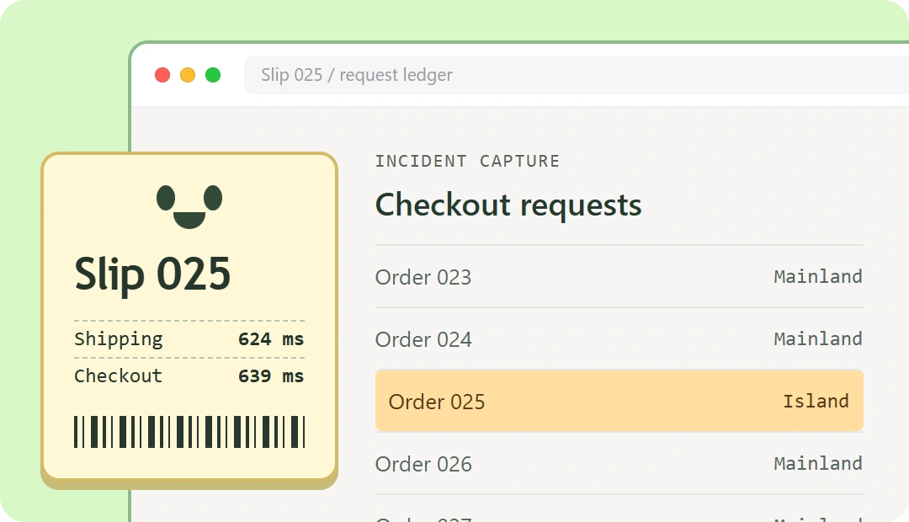

Request ledger
Pick an order to inspect its trace. Use the arrow keys to move between orders.
Under 200 ms 200 ms or more
All 100 orders went through. Four shoppers waited over 600 milliseconds. Can you spot what slowed them down?

Pick an order to inspect its trace. Use the arrow keys to move between orders.
Checkout includes the time spent validating the cart and calling shipping. The child bars sit inside that total.
Run three quotes on one route. The incident adds a delay to Island shipping. Mainland gives you a control.
Choose a route and run the test to measure each phase.
Loading recorded traces…
Two local Node.js services exchanged HTTP requests. OpenTelemetry linked their spans. Each phase ran 100 orders in the same sequence after eight initial warmups. During the incident, shipping used a 620 ms timer on the island route. Recovery restored the 12 ms timer.
Download raw measurements · Reproduce the experiment